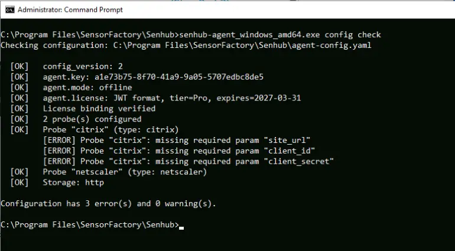
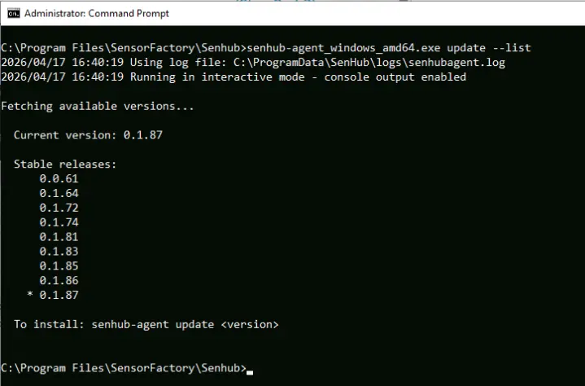

CLI Reference¶
All commands are run from the agent binary. Release artifacts are ZIP archives named senhub-agent-<os>-<arch>.zip (e.g. senhub-agent-linux-amd64.zip, senhub-agent-windows-amd64.zip). Each ZIP contains a binary already named senhub-agent (Linux/macOS) or senhub-agent.exe (Windows) — no renaming needed after extraction. See the Installation guide for details.
Service Management¶
| Command | Description |
|---|---|
install |
Install as system service |
uninstall |
Remove the system service |
start |
Start the service |
stop |
Stop the service |
restart |
Restart the service |
status |
Show service status and health |
status --otlp |
Same as status, plus an OTLP pipeline self-metrics block |
run |
Run interactively in console mode |
Status¶
The default status view prints service state, version, health, probes summary and resource usage. --otlp appends a four-section block summarising the OTLP push pipeline:
| Section | What it shows |
|---|---|
| Pipeline | Metrics / logs pushed totals, export errors, drops by reason |
| Store & Export | Store size, log buffer fill, last and mean export duration |
| Checkpoint | On-disk checkpoint size, age, restored-at-boot count, errors by stage |
| Parallel export | Number of sub-batches in the last push (1 = single-batch, >1 = fan-out by probe) |
Drops with reason=probe_cardinality indicate the per-probe cardinality budget was hit; store_cap, memory_soft_limit and memory_hard_limit flag other backpressure paths. See the OTLP guide for how to interpret each field.
--otlp calls the local HTTP strategy on port 8080 — the agent must have the web (or any other HTTP) endpoint enabled for the flag to return data. If the call fails, the standard status output still prints; a single-line note explains what went wrong.
Run (Console Mode)¶
The agent reads its configuration from the YAML file pointed at by --config-path. The default path is OS-specific: /etc/senhub-agent/agent.yaml (Linux), %ProgramData%\SenHub\agent.yaml (Windows), /usr/local/etc/senhub-agent/agent.yaml (macOS).
| Flag | Description |
|---|---|
--verbose, -v |
Enable debug logging for all modules |
--filter MODULES |
Filter debug logs by module prefix (implies verbose) |
--config-path PATH |
Configuration file path (default: OS canonical path) |
Debug Filter Examples¶
senhub-agent run --filter probe.veeam # Veeam probe only
senhub-agent run --filter probe # All probes
senhub-agent run --filter strategy.http,sensor # HTTP API + probe management
Use debug-modules-list to see all available filters.
Configuration¶
config check¶
Validates a configuration file and reports errors and warnings.
Checks performed:
- YAML syntax (with line-level error context)
- Required fields (config_version, agent.key, agent.mode)
- License validity and agent binding
- Probe types against the registry
- Required probe parameters (endpoint, credentials)
- Storage strategy names

debug-modules-list¶
Lists all available debug filter names.
Update¶
Check for updates¶
Checks if a newer version is available and displays it.
List available versions¶
Lists all stable versions. If auto_update.include_beta: true is set in the configuration, beta versions are also listed.

Install a specific version¶
Downloads and installs the specified version. Restart the service to apply.
License¶
Show license status¶
Activate a license¶
Validates the license and saves it in the configuration file.
Remove license¶
Reverts to free tier (cpu, memory, logicaldisk, network only).
Other¶
| Command | Description |
|---|---|
version |
Show agent version and build information |